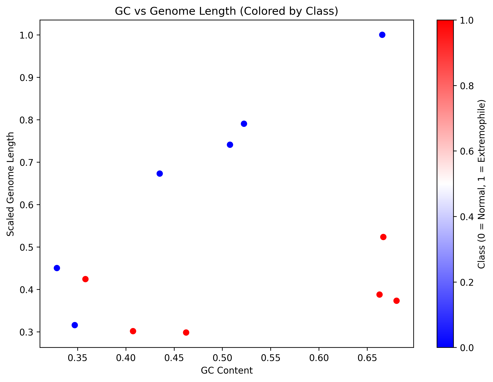
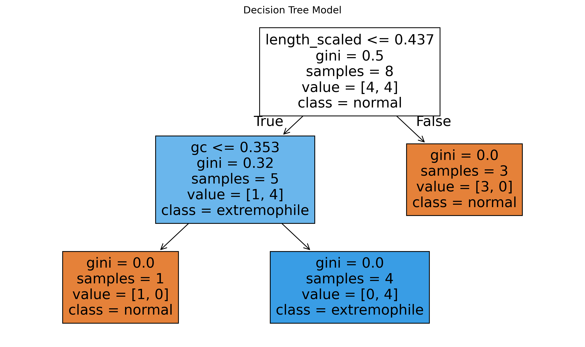
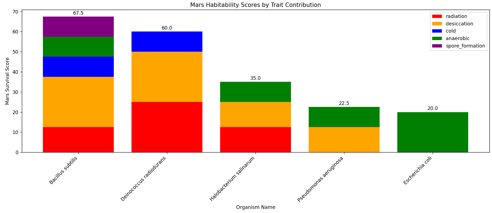
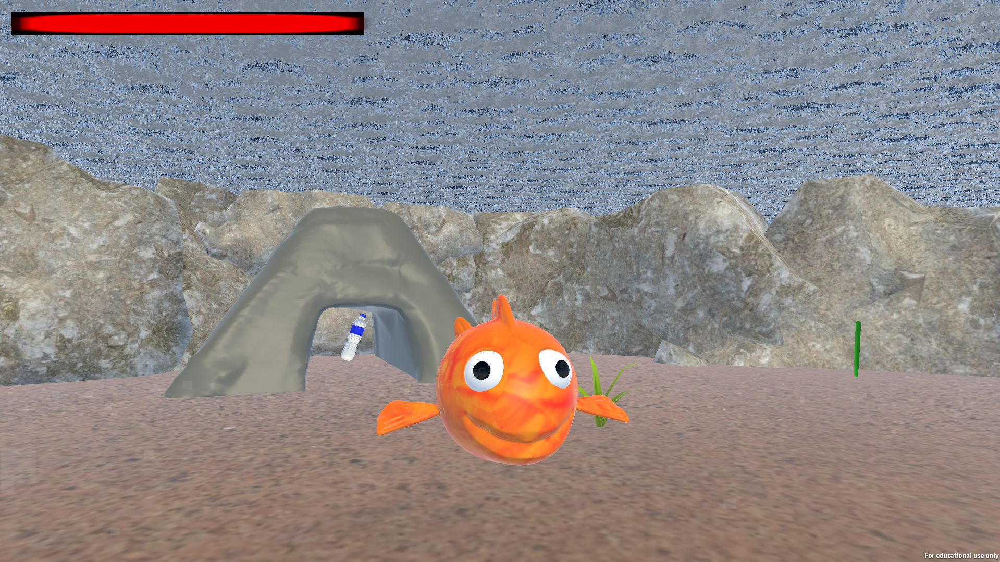

Computing Graduate | Bioinformatics & Data Analysis | Python & Machine Learning
I am a recent graduate with a BSc (Hons) in Computing and Digital Media from ATU Galway. I am currently transitioning into bioinformatics, with a focus on applying computational methods to biological problems.
I have experience working with genomic data, building Python-based models, and applying statistical and machine learning techniques to explore biological patterns.
Alongside this, I have a background in software development and testing, giving me a strong foundation in problem solving, debugging, and structured thinking.
A bioinformatics project investigating whether simple genomic features can be used to distinguish extremophile organisms from non-extremophile bacteria.


A computational model evaluating how well microorganisms may survive Mars-like conditions using biologically relevant traits.

A Python tool that simulates point mutations in DNA sequences and analyzes their effect on protein translation.
Environmental awareness game where the player controls a fish cleaning the ocean.

Wave-based zombie survival game with perk system.
Mobile task management app focusing on usability and productivity.
Database-driven system using SQL CRUD operations.